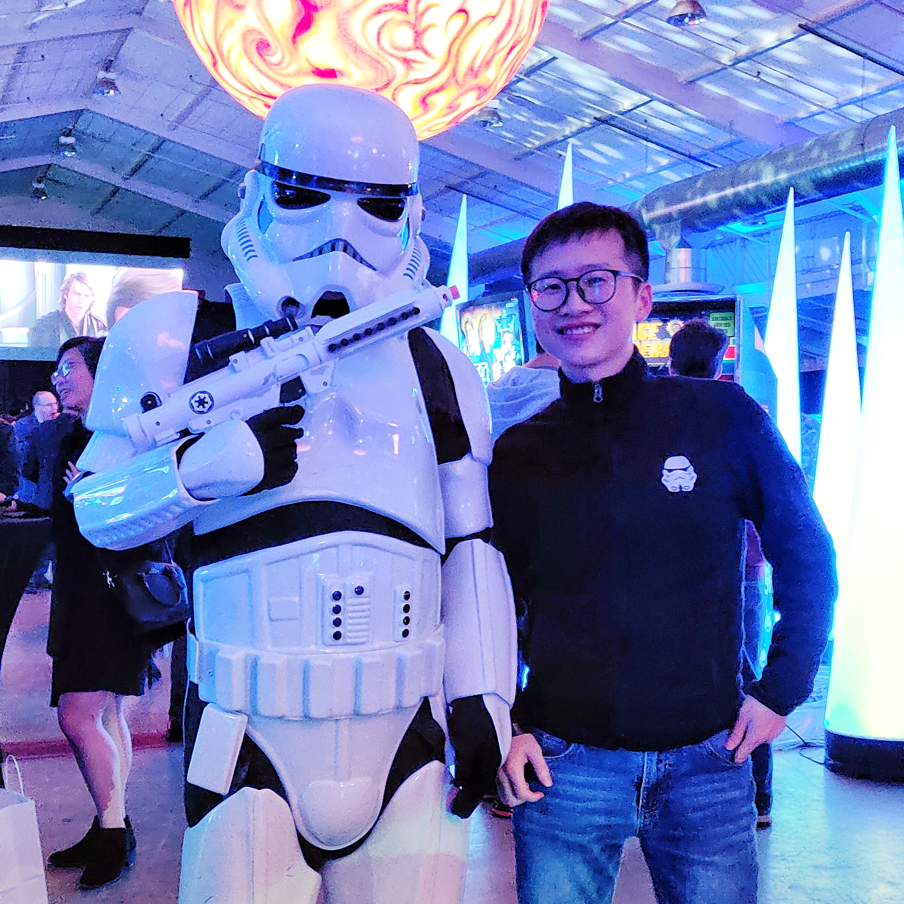

Side Li
About Me
I am a first-year grad student in the CSE department at UC, San Diego (aka no.1 campus in the nation for surfing). Before this, I graduated from the same school with a B.S. in Computer Science and a B.A. in Economics.
During my undergraduate study, I was privileged to work with professor Arun Kumar on advanced data analytics systems, and Dr. Ilya Zaslavsky on spatial information systems.
My research interests lie in the intersection of machine learning and systems. Particularly, I am passinate about designing and building innovative data systems, data analytics systems and machine learning systems.
[Curriculum Vitae]
[On Twitter]
News
-
Apr. 2019: I will return back to San Diego this fall to start my grad school journey.
-
Jan. 2019: MorpheusFI paper accepted at SIGMOD 2019! Let's see nonlinearity over factorized machine learning!
Publications
-
SpeakQL: Towards Speech-driven Multimodal Querying of Structured Data
Under submission
Vraj Shah, Side Li, Arun Kumar, and Lawrence Saul
-
Demonstration of SpeakQL: Speech-driven Multimodal Querying of Structured Data (demo)
ACM SIGMOD 2019
Vraj Shah, Side Li, Kevin Yang, Arun Kumar, and Lawrence Saul
-
Enabling and Optimizing Non-linear Feature Interactions in Factorized Linear Algebra
ACM SIGMOD 2019
Side Li, Lingjiao Chen, and Arun Kumar
-
A Novel Gateway for Visual Exploratory Analysis and Sharing of Survey Data (extended abstract)
The 11th Gateway Computing Environments Conference (2016)
Ilya Zaslavsky, Side Li, Stephan Lamont, David Valentine and Thomas Whitenack
Miscellaneous
-
I take some landscape pictures, and am still learning Photoshop. Follow me on instagram.
-
I'm an avid science fiction reader.